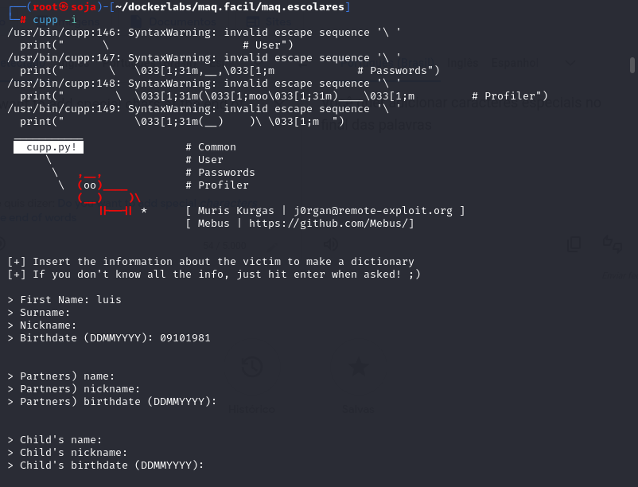
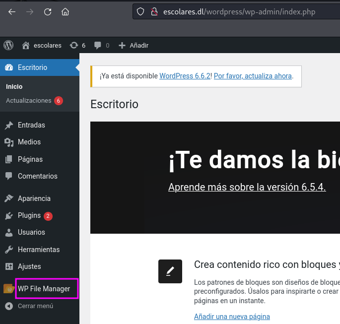

maq.escolares
MÁQUINA ESCOLARES
Para utilizar esta máquina devemos primeiro baixar os arquivos e assim implantá-la com Docker.
Baixamos o arquivo da página https://dockerlabs.es/
Para implantar o laboratório executamos da seguinte forma, para que também possamos ver que ele nos diz a direção que teremos, bem como o que fazer quando terminarmos.

COLETA DE INFORMAÇÕES
nmap 172.17.0.2 -A -sS -sV -sC --open -p- -T5 -n -Pn
Verificando as portas podemos ver que temos duas postas abertas a 22 e a 80.
Neste caso, focaremos na porta 80 executando um Apache. Acessaremos a página web hospedada nesta máquina através de um navegador e veremos o seguinte.
ao explorar a página quando clicamos em profesores. Notamos que nele tem um ( admin wordpress ).
Ao aplicar técnicas de fuzzing na direção , http://172.17.0.2 descobrimos diversas rotas, inclusive wordpress. Ao acessar esta rota, encontramos uma página que parece estar configurada com WordPress.
gobuster dir -u http://172.17.0.2 -w /usr/share/wordlists/dirb/common.txt -x txt,php,html
Ao usar a ferramenta wpscan com o comando
wpscan --url http://172.17.0.2/wordpress --enumerate u,vp
, podemos verificar a existência de plugins vulneráveis e listar os usuários existentes.
No processo, encontramos um usuário chamado
luisillo
, que corresponde a um dos professores que vimos anteriormente.

A
gora podemos tentar fazer ataques de força bruta usando ( _NÃO execute os seguintes comandos_ )
wpscan --url http://172.17.0.2/wordpress -U luisillo -P /usr/share/wordlists/rockyou.txt
, mas podemos não ter sucesso já que no dicionário
rockyou.txt
não encontraremos uma chave para fazer login...
Em situações como essa, podemos usar uma ferramenta chamada
cupp
para gerar dicionários de senhas personalizados com base nas informações que fornecemos.
Para usar o cupp, executamos o comando
cupp -i
, que inicia um formulário interativo. A ferramenta nos fará uma série de perguntas e, com base em nossas respostas, gerará um dicionário de senhas.
Neste caso, o cupp gerou um dicionário chamado
luis.txt
.

Agora usaremos wpscan --url http://172.17.0.2/wordpress -U luisillo -P luis.txtmas passando o caminho do dicionário de dados que acabamos de gerar usandocupp
UMA OUTRA OPÇAO DE FORÇA BRUTA É O HYDRA.
hydra -l luisillo -P luis.txt 172.17.0.2 http-post-form "/wordpress/wp-login.php:log=^USER^&pwd=^PASS^&wp-submit=Log In&testcookie=1:S=Location" -t 64
A seguir, procedemos ao login usando as credenciais obtidas. Uma vez dentro do painel de administração do WordPress, nosso objetivo é encontrar uma forma de acessar o servidor.
Uma estratégia para conseguir isso é aproveitar as vantagens de um plugin instalado chamado
WP File Manager
. Este plugin permite gerenciar arquivos do servidor diretamente do painel de administração, o que pode facilitar o acesso ao sistema de arquivos e, potencialmente, a outras áreas do servidor.
ENTRAMOS NO WORDPRESS
podemos ver que temos WP File Manager

Abrimos a aba e podemos ver o que temos nos themesarquivos twenty.
Carregamos um arquivo de teste test.php e podemos ver que é possível executar um
PHP
.

Se formos ao endereço onde está localizado nosso arquivo, veremos que ele foi executado.
http://escolares.dl/wordpress/wp-content/themes/twentytwentytwo/TEST.php
Agora que sabemos que podemos fazer upload de arquivos, faremos upload de um reverse shell. Como aquele que podemos encontrar no https://www.revshells.com/ antes de enviar o arquivo, primeiro iniciamos nosso ouvinte com a porta que atribuímos em nosso reverse shell.
Uma vez carregado, reverse shell inserimos o endereço web e podemos ver que já temos acesso.
http://escolares.dl/wordpress/wp-content/themes/twentytwentytwo/shell10.php
deixe o netcat na esculta: nc -lvnp 1999
temos a reverse shell no terminal da máquina atacante
Assim que eu fizer isso. Já temos maior mobilidade. Podemos ver que somos
www-data
então não devemos ter muitas permissões então iremos para home para ver se podemos acessar um diretório sem precisar de senha e podemos ver em home que além dos usuários temos um arquivo chamado
secret.txt
que contém a senha de
Luisillo
.
usuário: luisillo
senha: luisillopasswordsecret
ssh luisillo@172.17.0.2
Como já somos usuários. Primeiro vamos até sua pasta e listamos, mas não vemos nada, fazendo um sudo -lpodemos ver que temos a capacidade de elevar privilégios através do binário awk.

Vamos para a página https://gtfobins.github.io/gtfobins/awk/#sudo e observamos o comando para poder elevar privilégios abusando deste binário.
somos root
bobmarley